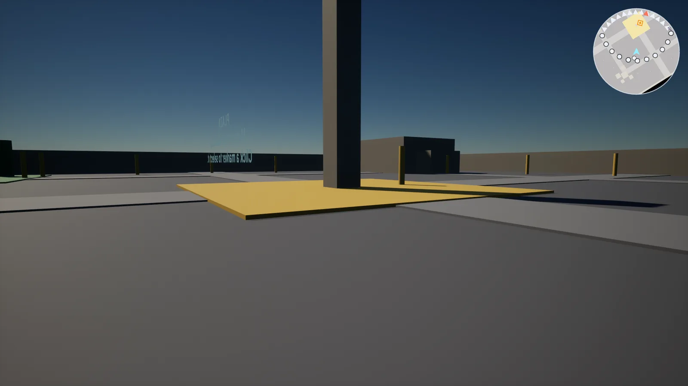
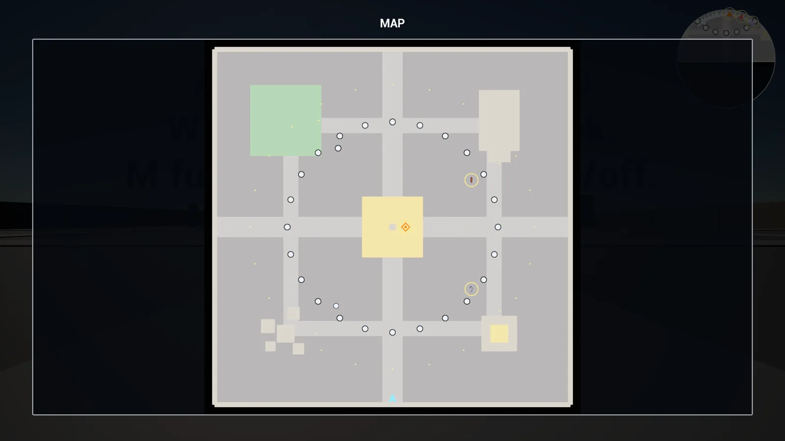
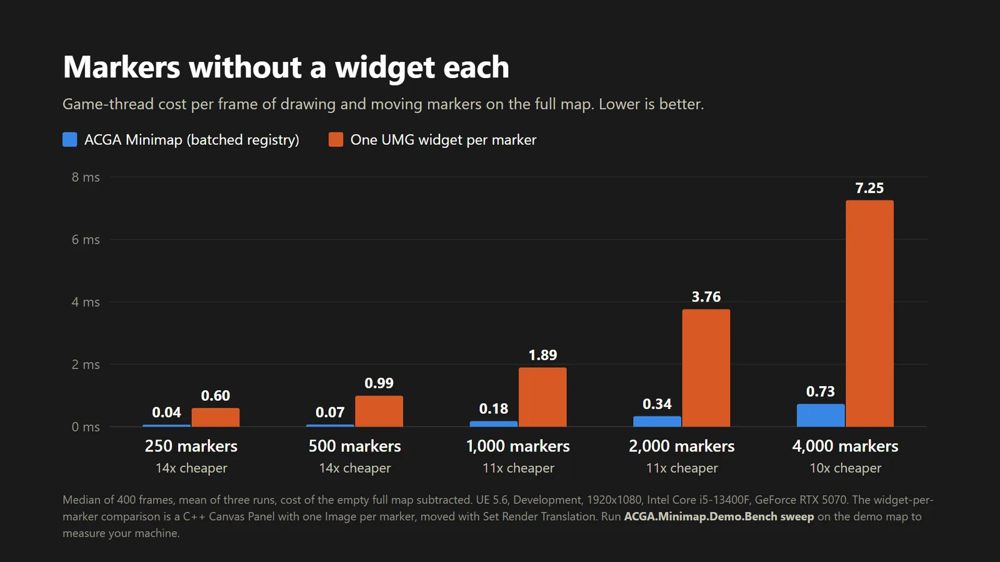

The benchmark: 2,000 markers moving across the full map every frame.
About the tool
Shooters, survival and strategy games put a lot of things on the map: teammates, objectives, loot, points of interest. I wanted a minimap that a team can drop into an existing project and that stays cheap however much they put on it, with a few rules from the start: one place that converts world positions to the map, no per-frame searches through the level's actors, and nothing in the registry named after a game mode.
When I researched Fab before starting, the minimap category was saturated: two established C++ plugins, one of them cheaper and with more features than anything I planned. A better generic minimap was not a reason to buy. The one thing nobody in the field claimed was how many markers a map can hold, so I built the product around that and made the claim provable: a benchmark ships in the demo and compares the plugin against the usual UMG approach. The rule I set was that if it was not clearly faster from 500 markers up, the product would be cancelled. On UE 5.6 it came out 10 to 14 times cheaper.
Key features
One Map Marker component per actor, or a location pin with no actor behind it.
Minimap and full map are the same widget with different settings: circle or rectangle, north-up or rotating, any zoom.
Off-view markers pin to the minimap edge and swap to an arrow pointing the true bearing.
Full-screen map with click selection, a selection limit (oldest drops) and Blueprint events.
Map background baked from the level by a capture actor, re-rendered live, or a painted texture.
Every look setting in Project Settings, so one change restyles every map in the game.
How it works
Enable the plugin and drop one Map Capture actor in the level; its box defines the mapped area and the map picture is taken from it.
Drag the Map View widget into the HUD you already have and set its zoom.
Add a Map Marker component to any actor that should appear, and pick its icon from a dropdown.
Bind a key to Toggle Full Map; the full map takes the cursor and gives it back on close.
Tune shape, rotation, clamping and icons in Project Settings, or override them per view.
Design decisions
Markers are not widgets
Challenge
In UMG, the natural way to build a map is one widget per marker. Each widget costs layout and paint every frame, so the cost grows fast with marker count, and the category leaders either accept that or only stream nearby markers.
Iterations
I considered positioning it as a generic, cheaper minimap and rejected that: the research showed no gap there. I kept the marker-count position on one condition, that it be measured before the listing said it. The benchmark moves 250 to 4,000 markers across the full map every frame, through the plugin and through a C++ Canvas Panel with one Image per marker (the cheapest UMG version, not a strawman), and records Slate, game-thread, render-thread and GPU time.
Final design
Markers are 24-byte render states in a flat array with no pointers in it, read by one Slate view that draws them in a single pass. With 2,000 moving markers on UE 5.6 that is 0.34 ms per frame against 3.76 ms for the widget version, and at 4,000 the frame time does not change at all. The benchmark ships with the plugin (ACGA.Minimap.Demo.Bench), so a buyer can run it instead of trusting the number.
One transform for everything, after a failed playtest
Challenge
The first playtest of the minimap was blunt: it was the worst thing in the demo. When it rotated, the terrain and the markers slid apart.
Iterations
Having a single world-to-map conversion was not enough; the view transform on top of it had three compounding bugs. The zoom read the wrong axis, the two axes were scaled independently (so rotating sheared the image instead of rotating it), and the capture framed a square while the projection assumed a rectangle. Each one alone was invisible on a square test map.
Final design
The view works in world centimetres and widget pixels related by a single uniform scale plus a rotation, so the background and the markers can no longer disagree. The circular minimap is real geometry (a triangle fan), not a mask material the buyer has to author, and the background is clipped to the captured area so the space beyond the edge of the world shows a plain colour instead of smeared texture.
Rotation is a project setting
Challenge
Whether the minimap turns with the player is usually one line in a game's options menu, but as a per-widget property it means finding every map view in the project to change it.
Iterations
It started as a property on each view.
Final design
Rotation is a project-wide setting with a runtime override (Set Minimap Rotation). Every view on the default follows it at once, and a view can still opt out.
Technical notes
Modules: a runtime module, plus a demo module (demo map, character, benchmark) that can be deleted without affecting the product.
Dependencies: Core, CoreUObject, Engine, UMG, Slate, SlateCore, DeveloperSettings, InputCore. Enhanced Input is listed only because the demo module uses it.
Drop-in: nothing to reparent and nothing to change in the GameMode, Character or Controller; the plugin never adds anything to the viewport by itself.
Performance: the figures above are UE 5.6, Development build, 1920x1080, Core i5-13400F, RTX 5070. On UE 5.8 the same benchmark gives 6–10x, because engine-side cost per draw element grew between versions.
Verification: self-playing automation tests (the demo plays itself and the benchmark runs a short sweep), run on 5.6 and 5.8; built warning-free on 5.6, 5.7 and 5.8.
Limitations: no fog of war or map reveal, no multiple floors, no route drawing, full-map selection by mouse only, not replicated (markers follow actors your game already replicates), placeholder icon art.
Gallery

In the demo district: the HUD minimap turning with the player, with a landmark pinned to its edge by a bearing arrow.

The full-screen map, north-up, with landmarks selected and ringed.

Per-frame cost against marker count, this plugin versus one UMG widget per marker (UE 5.6).